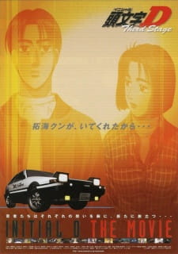
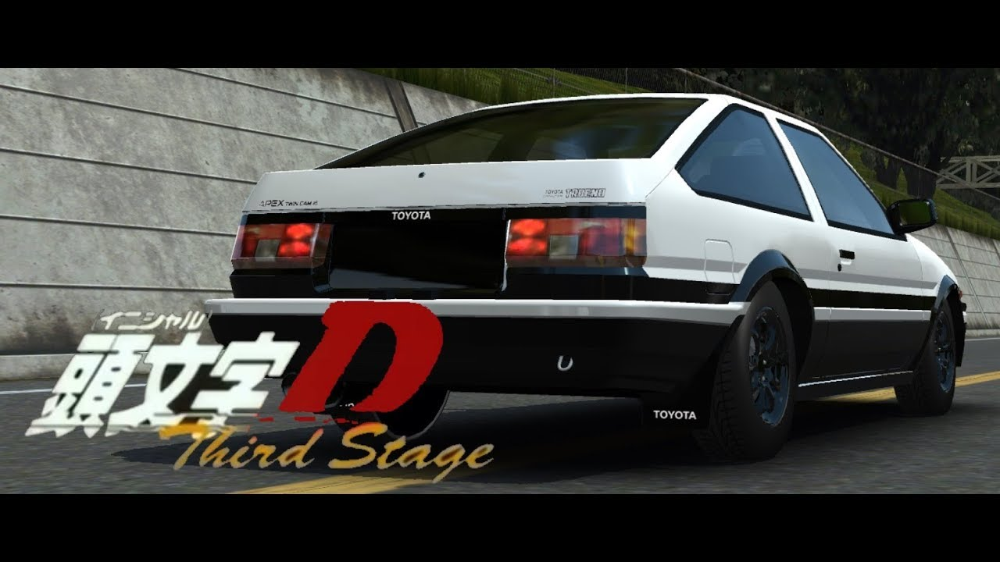
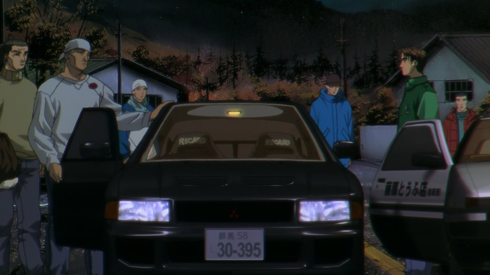

Ordem Cronológica
Third Stage
Ryosuke convida Takumi para entrar para o novo time que ele criou, que irá ter os melhores pilotos de Gunma.
Takumi não quer decidir se aceita ou não a proposta de Ryosuke até que ele decida a batalha em aberto contra Kyoichi. Assim que ele chega ao circuito local dos Emperor e olhar bem a pista, Takumi desafia Kyoichi. Ele impede que Kyoichi o ultrapasse e vence na última curva de Irohazaka. depois de vencer Kyoichi, um piloto local chamado Kai Kogashiwa, que planejava vencer Kyoichi, desafia Takumi. Ele revela ser filho de Ken Kogashiwa, que era rival de Bunta e perdeu para ele na última corrida que os dois disputaram. Kai surpreende Takumi utilizando a "linha especial" que seu pai ensinou. Ele ultrapassa Takumi pulando pelo canteiro da curva. Entretanto, Kai superestimou sua estratégia e isso permitiu que Takumi conseguisse se recuperar. Ele copia a linha de Kai para poder acompanhá-lo. Antes da corrida, Bunta sabia que Takumi chegaria a esse ponto e secretamente o ensinou que as folhas secas de Irohazaka seriam sua única chance. Perto do final, Takumi usa a sarjeta para correr pelo lado de dentro da pista, forçando Kai a correr do lado da pista que está cheia de folhas, ultrapassando Kai quando ele acaba rodando seu carro por causa das folhas.
O Natal se aproxima e Natsuki surpreende Takumi em sua casa, celebrando o Natal com ele e Bunta. No ano novo, Miki, um ex-aluno do mesmo colégio que Takumi e que foi socado por ele após falar sobre suas relações sexuais com Natsuki, vai até o trabalho de Natsuki e a ameaça para fazê-la entrar no seu carro. Ele a leva para o Lago Akina com a intenção de transar com ela, mas depois que ela revela que gosta de alguém, ele fica furioso e tenta violentá-la. Ela foge e liga para Takumi. Quando Miki ouve o nome de Takumi e percebe que é dele que Natsuki gosta, ele a força a entrar no carro novamente para fugir. Eles passam por Takumi, que estava vindo na direção oposta em seu AE86, para salvar Natsuki. Takumi dá meia-volta e persegue Miki. Quando Miki tenta fugir, ele entra muito rápido em uma curva e perde o controle, batendo no guardrail. Takumi leva Natsuki para casa, ambos revelando seus sentimentos no caminho. Quando a primavera chega, Takumi diz a Ryosuke que quer correr novamente com ele, desta vez em Akagi, antes de decidir sobre o novo time. Não se sabe quem venceu a corrida, mas Keisuke diz que essa corrida não é sobre vitória ou derrota. Quando estão perto do fim da corrida, Takumi decide que ele quer fazer parte do novo time de Ryosuke.


